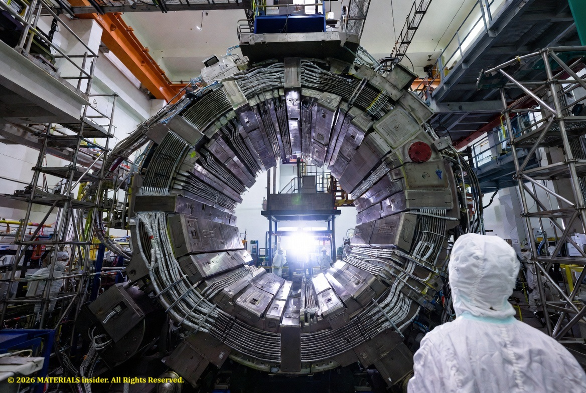
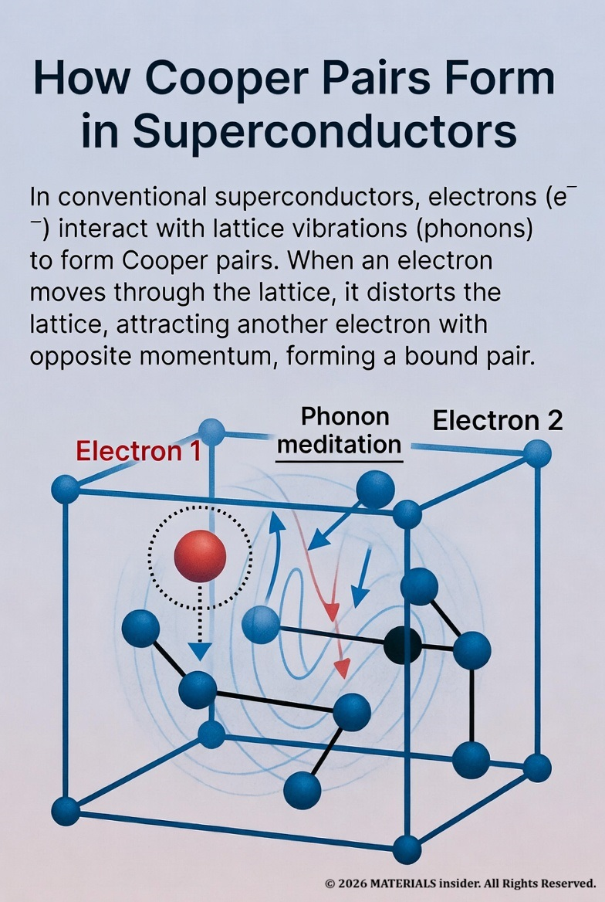
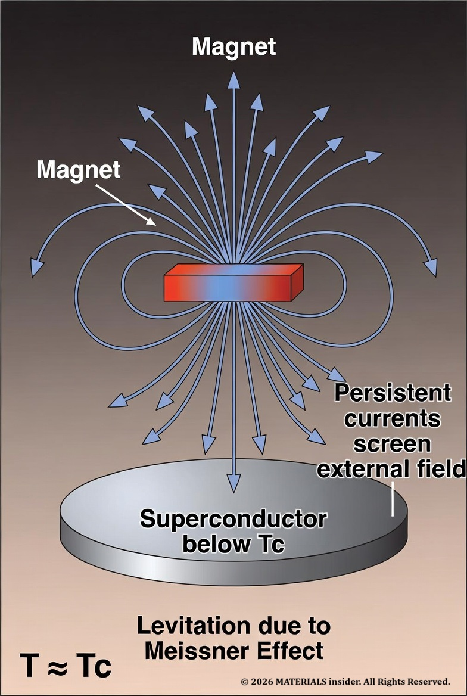
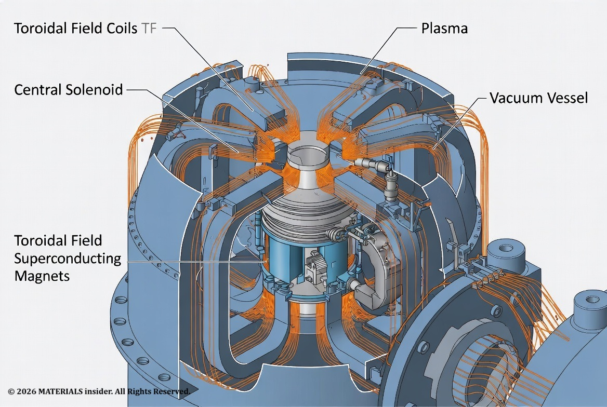
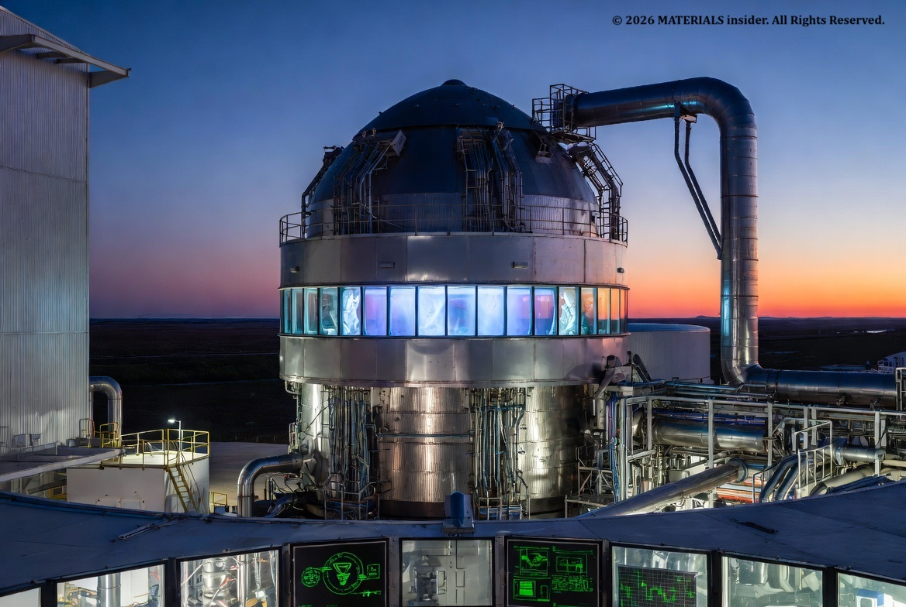

Superconductors: China’s Record-Breaking Superconducting Magnet with Unlimited Clean Energy
On June 27, 2026, scientists and engineers in Hefei, Anhui Province, announced a historic milestone: the completion and successful testing of the world’s largest superconducting magnet ever built for a fusion reactor.

This 582-tonne toroidal field (TF) magnet — measuring 21 meters long, 12 meters wide, and 3.3 meters high — has officially become the largest of its kind. It stores three times more energy than the TF magnets designed for the international ITER project and has 1.3 times the volume. Developed under China’s Comprehensive Research Facility for Fusion Technology (CRAFT) “artificial sun” program by the Institute of Plasma Physics, Chinese Academy of Sciences (ASIPP), the magnet passed expert review after six years of design, research, and testing. It achieved full domestic production with 47 authorized patents and 14 new technical standards.
A second breakthrough — a high-temperature superconducting (HTS) central solenoid coil operating at a stable 60 kA with 6.03 MJ energy storage — also completed full-condition testing at world-leading performance levels.
These achievements dramatically strengthen China’s independent fusion engineering capabilities and bring commercial fusion power one step closer.
The Massive Scale of the Achievement:
Imagine a D-shaped coil so enormous that it dwarfs heavy machinery and requires specialized cleanroom facilities and cranes. This is not science fiction — it is the new reality in Hefei. The magnet will generate the powerful, steady magnetic fields needed to confine plasma at temperatures exceeding 100 million °C (far hotter than the Sun’s core) inside a tokamak fusion device.
Without such magnets, the superheated plasma would touch the reactor walls and cool instantly, ending the fusion reaction. The toroidal field coils create the “magnetic bottle” that keeps everything suspended in a vacuum.
How Superconductors Work at the Atomic Scale:
To understand why this magnet is possible, we must zoom into the atomic world.
In ordinary metals (copper, aluminum, etc.), electric current flows when free electrons move through the crystal lattice. However, these electrons constantly collide with vibrating atoms (phonons) and impurities, losing energy as heat — this is electrical resistance.
Below a critical temperature (Tc), certain materials undergo a dramatic quantum phase transition. The resistance drops abruptly to zero. Not nearly zero, but absolutely zero!
The key mechanism: Cooper pairs -->
According to the celebrated BCS theory (Bardeen–Cooper–Schrieffer, 1957), electrons in conventional superconductors do not travel alone. An electron moving through the positively charged ion lattice slightly distorts it, creating a region of higher positive charge density. This attracts a second electron with opposite momentum and spin, forming a Cooper pair.

These pairs behave as bosons (integer spin) rather than fermions. At low enough temperatures, they condense into a single macroscopic quantum state — a Bose-Einstein condensate of pairs. Because all pairs occupy the same quantum state, they can flow coherently without scattering. There are no available energy states for individual electrons to scatter into, hence zero resistance.
A second miraculous property appears: the Meissner effect. Superconductors expel magnetic fields from their interior (below a critical field strength). Persistent screening currents on the surface perfectly cancel external fields, enabling magnetic levitation.

Type I vs Type II superconductors:
- Type I (pure metals like lead, mercury): abrupt transition, low critical fields — unsuitable for high-field magnets.
- Type II (alloys and compounds like Nb-Ti, Nb₃Sn, and high-temperature cuprates/REBCO): allow magnetic flux to penetrate in quantized vortices above a lower critical field but remain superconducting up to a much higher upper critical field (Bc2). This makes them ideal for powerful magnets.
Fusion magnets typically use low-temperature superconductors (LTS) such as Nb₃Sn for the highest fields, cooled by liquid helium at ~4 K. The new Chinese central solenoid uses high-temperature superconductors (HTS), which can operate at higher temperatures (20–77 K) with liquid nitrogen or cryocoolers, offering potential advantages in efficiency and field strength.
Why Tokamaks Need These Giant Magnets:
A tokamak is a donut-shaped (toroidal) device. The toroidal field (TF) coils — exactly the type just completed in China — produce a strong magnetic field that twists around the torus like a ring. This field, combined with the poloidal field generated by the plasma current itself, creates helical field lines that stabilize the plasma.
The central solenoid acts like the primary winding of a transformer. By ramping current through it, it induces a massive toroidal current in the plasma (up to millions of amperes). This plasma current both heats the plasma through ohmic heating and helps shape and position it.

The Chinese TF magnet’s enormous energy storage capacity (three times ITER’s) means it can sustain stronger, more stable fields for longer pulses — critical for steady-state or long-pulse operation needed in future power plants.
Real-World Applications of Superconducting Magnets:
Superconducting magnets are already transforming multiple industries:
- Medical Imaging : MRI scanners (the largest commercial market) use Nb-Ti magnets to create uniform fields of 1.5–7 T or higher.
- Particle Physics : The Large Hadron Collider (LHC) at CERN relies on thousands of Nb-Ti and Nb₃Sn magnets to steer protons at nearly light speed.
- Magnetic Levitation (Maglev) : Japan’s SCMaglev and China’s high-speed maglev trains use superconducting magnets for frictionless, ultra-fast travel.
- Scientific Instruments : Nuclear magnetic resonance (NMR) spectrometers and ion cyclotron resonance mass spectrometers.
- Energy Storage : Superconducting Magnetic Energy Storage (SMES) systems can release stored energy in milliseconds for grid stabilization.
- Fusion Energy : The ultimate application — the magnets you just read about.
Emerging uses include compact fusion devices from private companies and advanced quantum sensors.
The Bigger Picture: China’s Fusion Ambitions and Global Context:
This magnet is a cornerstone of the CRAFT project, which develops and qualifies key technologies for the China Fusion Engineering Test Reactor (CFETR) — China’s planned next-step device after EAST (the Experimental Advanced Superconducting Tokamak, also in Hefei).
China has pursued a clear roadmap: EAST has already achieved record plasma durations; CRAFT validates full-scale components; CFETR will demonstrate tritium breeding and high-duty-cycle operation; ultimately leading to commercial DEMO reactors.
While ITER (the international project in France) remains the largest collaborative effort, delays have opened space for national programs. Private ventures worldwide are also racing ahead using high-temperature superconductors for more compact, higher-field designs.
China’s achievement of 100% domestic production for these critical components reduces supply-chain risks and demonstrates mastery of some of the most demanding materials engineering challenges: winding brittle Nb₃Sn conductors into precise geometries, managing enormous electromagnetic forces, ensuring reliable superconducting joints, and protecting against “quenches” (sudden loss of superconductivity).
Looking Ahead:
The successful testing of both the record-breaking TF magnet and the advanced HTS central solenoid marks more than a technical milestone — it is a statement of intent. Materials science sits at the heart of the fusion dream. Every improvement in superconductor performance, cryogenic systems, structural materials, and manufacturing precision brings us closer to a world powered by the same process that lights the stars.
Fusion promises virtually unlimited clean energy with no long-lived radioactive waste and no meltdown risk. The road is still long and expensive, but milestones like this one in Hefei show the path is being paved — literally with some of the largest and most sophisticated pieces of technology humanity has ever built.

Credits & Sources:
Primary reporting based on CGTN coverage (June 27, 2026) and supporting details from the Institute of Plasma Physics, Chinese Academy of Sciences (ASIPP) via CRAFT project documentation. Additional context drawn from peer-reviewed literature on fusion magnet technology and international fusion programs. All explanatory diagrams and illustrative images created specifically for this article to aid understanding.
Share it with fellow materials enthusiasts, engineers, and anyone excited about the future of clean energy.
Share this article: